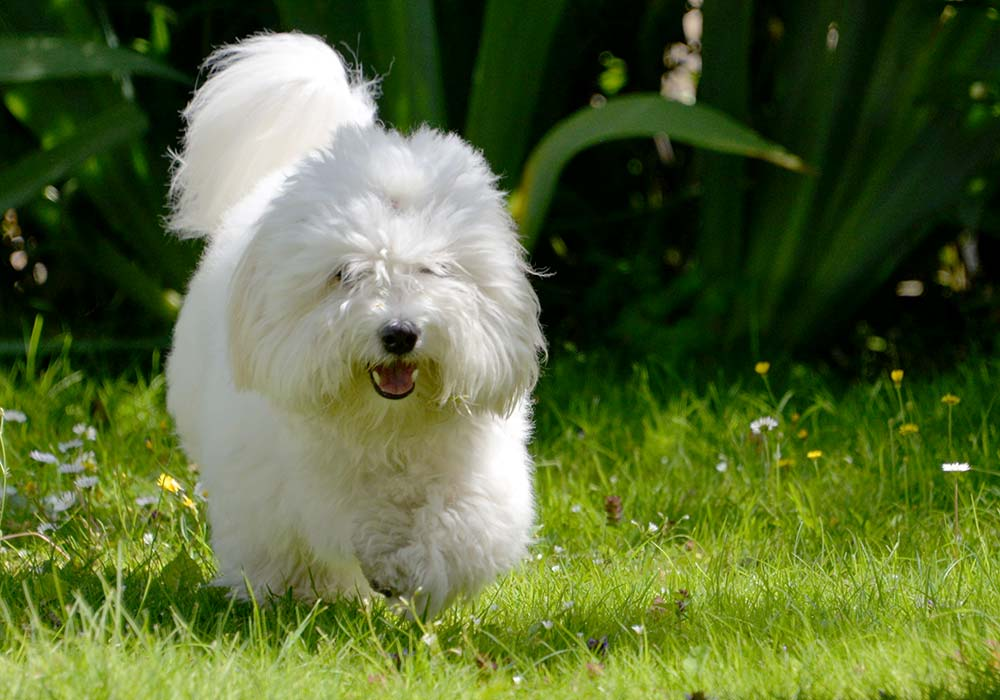
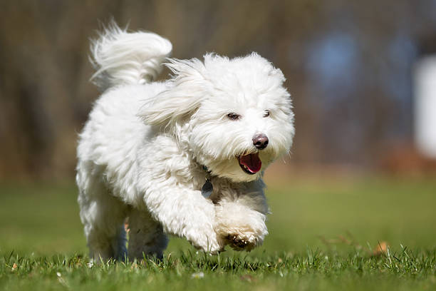
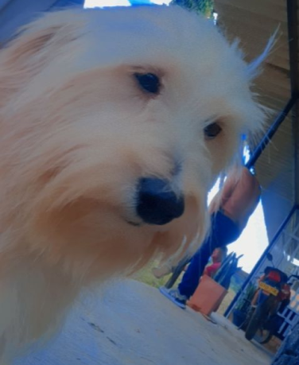
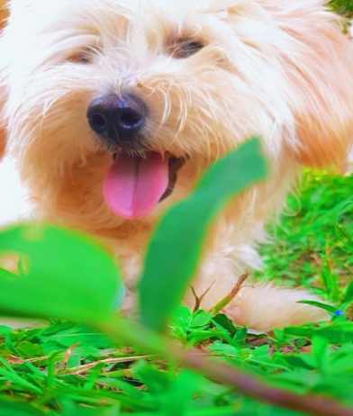
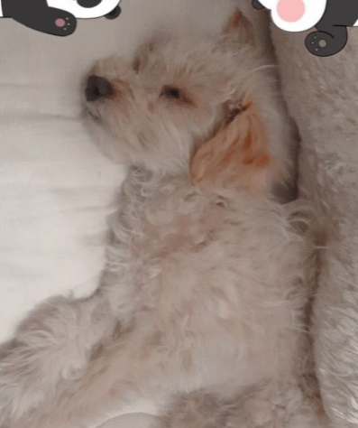

Coton de Tulear
Es un perro cariñoso y fiel que disfruta de las personas y no le gusta separarse de su familia,
disfruta de sus labores de perrito faldero y es divertido, jugueton y vivaracho.
Origen
Tambien se le conoce como "perro real de Madagascar" y es una raza estabecida hace mucho, que toma
su nombre de Tulear, una ocalidad portuaria en la costa sudoeste de la isla. Se dice que en el siglo
XV varios perros tipo bichón sobrevivieron a un naufragio y nadaron hasta Tulear, donde se cruzaron con
los terriers locales, lo que dio como resultado al Cotón de Tulear. S e convirtio en un perro muy popular
en los hogares reales, tanto que se llego a publicar una ley que prohibía tener esta raza a quien no
perteneciese a la nobleza.
los perros de compañia tienen un metabolismo rápido, lo que significa que queman energía a un ritmo muy alto.
Esto supone que, con un estómago tan pequeño, deben comer poco pero a menudo. los alimentos para razas pequeñas
estan específicamente ideados con proporciones adecuadas de nutrientes clave y unos granos de menor tamaño que
se adapten a bocas mas pequeñasa. Esto, además estimula la masticacion y mejora la digestion.


El pelaje es caracteristico de la raza y la causa de su nombre, ya que "Coton" significa "algodón" en francés.
Es suave, suelto, denso y especialmente algodonoso. De acuerdo con el estandar FCI, el color de fondo siempre es
blanco, pero sobre las orejas se suele ver rastros de color gris o rojo roano. Estándaares raciales de otras
organizaciones permiten otros colores.
Si buscas un perro con e que pasar gran parte de tu tiempo para jugar con él y ofrecerle todo su cariño, sin duda
e coton de Tulear es el compañero que buscas.


